Префектура Окинава · Наха, Урасоэ, город Окинава · искусство
Танцы, кумиодори и песни под сансин: как смотреть и слушать искусство Окинавы
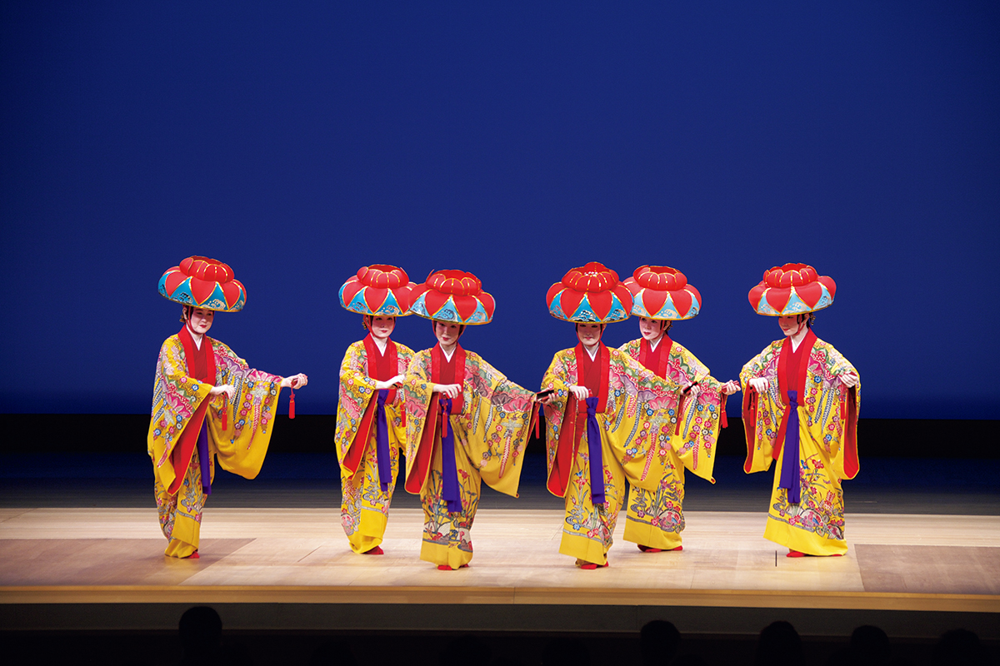
Окинаву называют островом искусств. Танцы, музыка и театр здесь пережили королевство Рюкю, японскую и американскую власть и до сих пор звучат не только на сцене, но и на свадьбах и семейных праздниках.
Введение
Остров, где поют и танцуют
Фестивали, спектакли и отчётные концерты идут на Окинаве круглый год. На свадьбе или на празднике в честь шестидесятилетия родственники и друзья встают и поют или танцуют для виновника торжества: искусство здесь часть обычной жизни.
Жанров удивительно много. Есть придворные искусства: кумиодори, которому больше 300 лет, рюкюская классическая музыка и рюкюские танцы. Есть то, что родилось из жизни простых людей: окинавский театр и народные песни. И есть деревенские обряды, у каждой местности свои: танец льва и эйса. Всё это не забыли, а передают следующим поколениям.
«На самом деле на Окинаве столько искусств, что одним словом не объяснишь. Хочется, чтобы люди узнали старую Окинаву, какой она была 300 лет назад и 50 лет назад. У каждой эпохи свой запах и свой пейзаж, и через искусство можно почувствовать очень разную Окинаву»
художественный руководитель Национального театра Окинавы
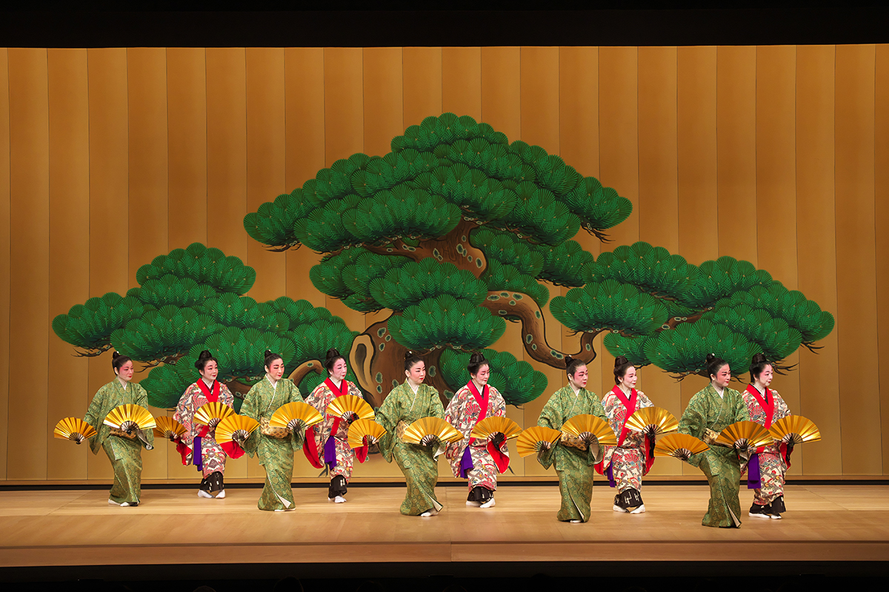
История
Спектакль для китайских послов
Королевство Рюкю стояло на перекрёстке морских путей в Восточно-Китайском море и вело оживлённую торговлю с Китаем и странами Юго-Восточной Азии. В конце XIV века из Китая привезли сансин, трёхструнный инструмент. На нём стали играть самураи, а в начале XVII века он официально стал придворным инструментом.
Когда на престол Рюкю вступал новый король, из Китая по приказу императора приезжали послы сакухоси, и только при них проходила коронация. Гости жили на острове около полугода, и двор искал, чем их развлечь на пирах. Для этого ввели должность распорядителя танцев. Её получил талантливый Тёкун Тамагусуку: он соединил рюкюские предания с тем, что видел в Японии, в театре но и кёгэн, и создал музыкальную драму кумиодори. Впервые её показали в 1719 году на пиру в честь коронации короля Сё Кэя.
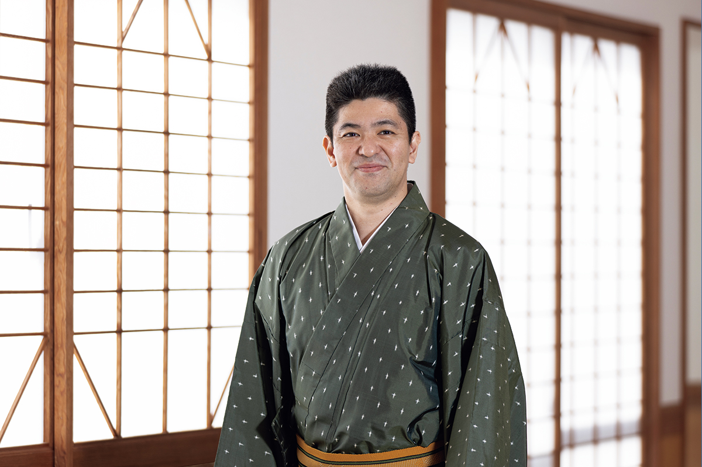
«Кумиодори это что-то вроде рюкюской оперы, и по нему видно, как высока была культура королевства. Текст звучит в особом ритме 8-8-8-6, а послы смотрели спектакль, слушая пояснения переводчика. Сюжеты строили на верности и сыновнем долге, которые так ценил Китай, и вкладывали в них позицию Рюкю. Это была своего рода дипломатия маленькой страны»
доцент Окинавского префектурного университета искусств
В 1879 году королевство упразднили. Самураи, которые выступали при дворе, остались без средств и пошли играть кумиодори за деньги, для простой публики. Но изысканное придворное искусство горожанам быстро наскучило, и актёрам пришлось придумать новое. Так появились окинавский театр о любви и житейских делах и дзо-одори, быстрые танцы под весёлую музыку на сюжеты из жизни простых людей. Пьесы имели огромный успех.
«Важно понимать, что окинавский театр и дзо-одори созданы заново, это не переделка кумиодори и классического танца. Придворное искусство показывать было негде, но учителя всё равно бережно передавали его ученикам, и только поэтому оно дожило до наших дней»
доцент Окинавского префектурного университета искусств
Жанры
Шесть слов, которые стоит знать
Рюкюские танцы бывают трёх видов: классические, которые исполняли на пирах для послов, дзо-одори, появившиеся после 1868 года, и авторские танцы, поставленные после войны. Кумиодори состоит из речитатива, музыки и танца; от классического репертуара сохранились тексты 70 пьес. Сансин, привезённый из Китая, переделали под рюкюскую музыку, и на сцене он обычно звучит вместе с цитрой кото, флейтой, барабаном и смычковым кокю.
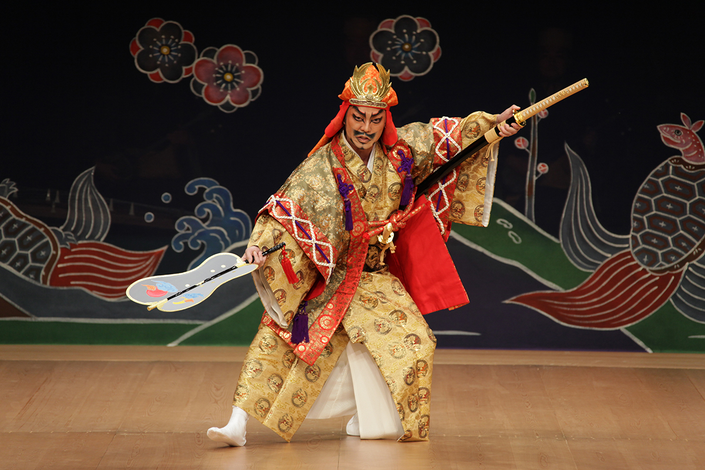
Окинавский театр сложился после 1868 года как народное развлечение. В нём есть исторические пьесы о временах королевства и бытовые о жизни конца XIX и начала XX века. После войны, при американском управлении, этот театр поддерживал жителей острова. К этому стоит добавить рюкюскую классическую музыку, народные песни минъё и деревенские обрядовые искусства.
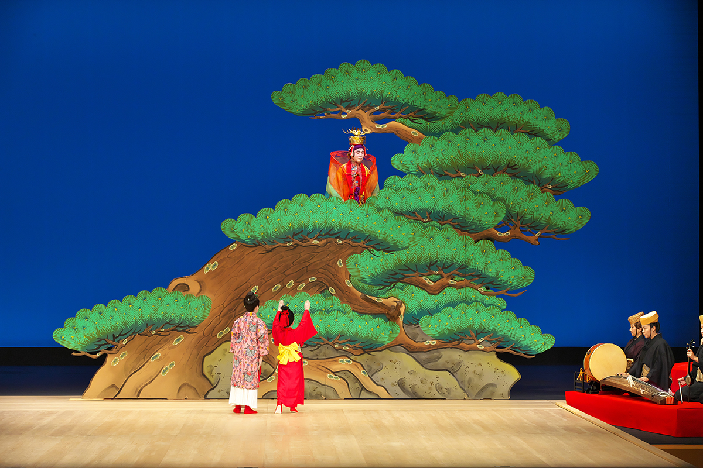
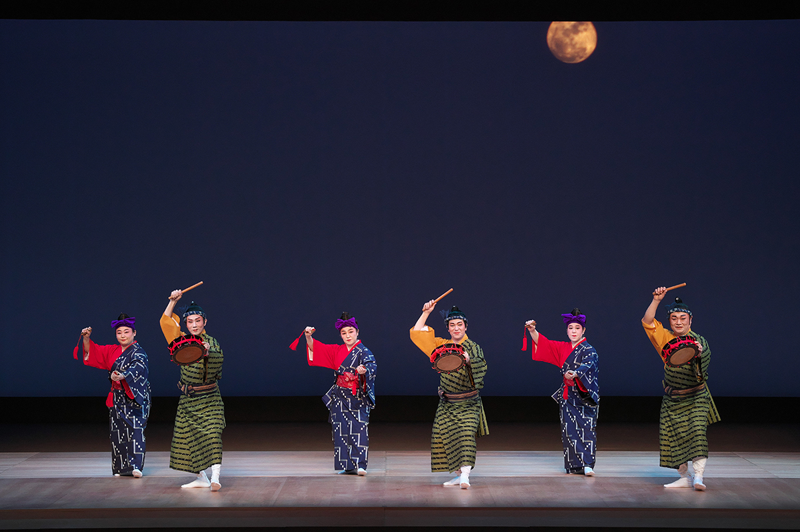
Новичку
С чего начать: кумиодори и окинавский театр
Специалисты советуют начинать с кумиодори и окинавского театра. В кумиодори обязательно стоит посмотреть пьесы Тёкуна Тамагусуку: «Нидо тэкиути», «Сюсин канэири», «Мэкаруси», «Онна мономуруй» и «Коко но маки».
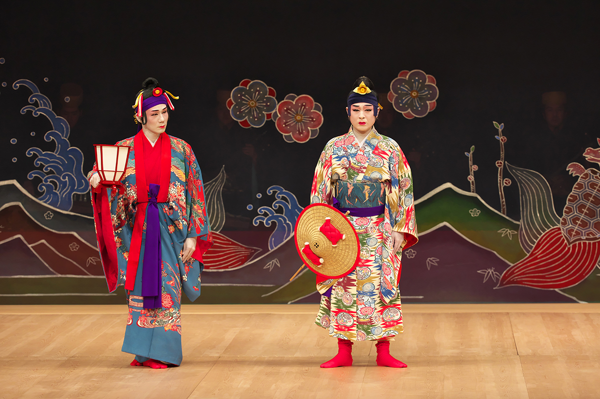
Перед спектаклем полезно выучить несколько условностей. Актёр в шляпе и с посохом в руке находится в пути. Если двое кладут руку друг другу на плечо, значит, они обнимаются. Текст звучит медленно, на старом рюкюском языке, в ритме стихов рюка 8-8-8-6. Музыканты исполняют классическую музыку, и она передаёт радость, гнев и печаль героев. Походка, осанка, движения рук и пальцев построены на рюкюском танце.
Окинавский театр делится на два вида. Музыкальная драма соединяет песни, диалоги, игру и танец, а пьесы на диалекте разыгрывают обычной разговорной речью. Четыре пьесы, впервые показанные в конце XIX и начале XX века, называют четырьмя великими музыкальными драмами: «Томари Ака», «Иэдзима хандо-гва», «Окуяма но ботан» и «Якусидо». Первые три считаются шедеврами трагедии и до сих пор доводят зрителей до слёз.
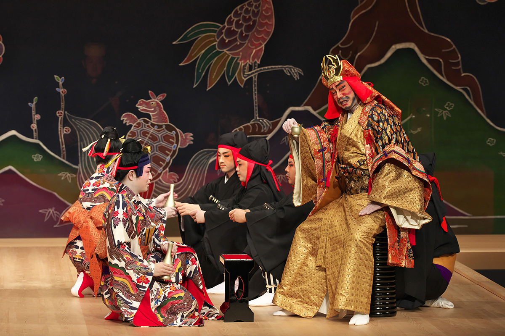
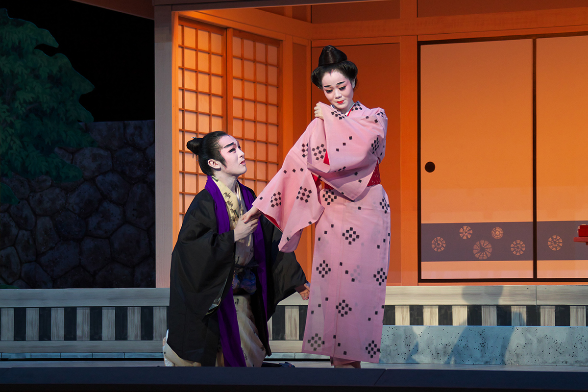
В окинавском театре стоит слушать диалект утинагути: на нём поют и говорят, и игра получается очень живой. На сцене видны старые обычаи и характер окинавцев, а многие темы понятны и сегодня. Весёлые дзо-одори рассказывают о жизни простых людей: о ней говорят костюмы, причёски и мелкие вещи в руках танцоров.
Кино
Кумиодори на экране
В 1972 году кумиодори признали важным нематериальным культурным достоянием Японии, а в 2010 году внесли в список нематериального культурного наследия ЮНЕСКО. Чтобы показать его шире и понятнее, с 2014 года спектакли снимают на видео, а с 2022 года пьесы из «пяти номеров Тёкуна» начали выходить как фильмы.
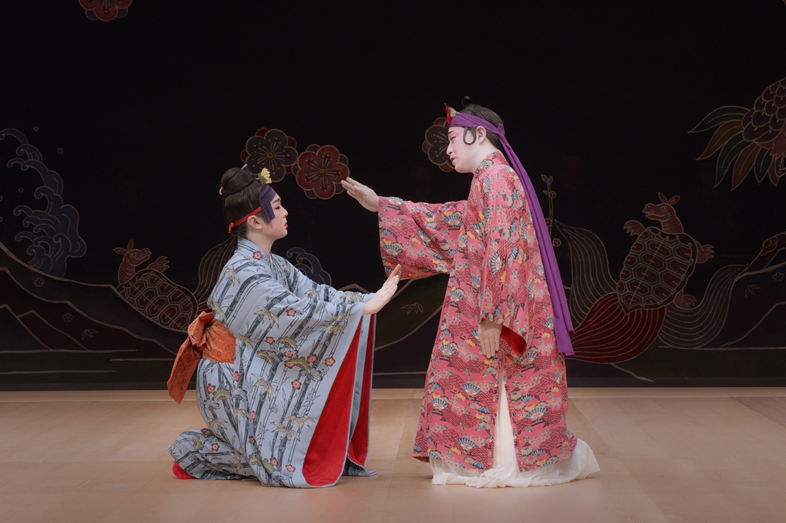
Фильм начинается с рассказа об истории и особенностях кумиодори, а речитатив снабжён субтитрами, поэтому смотреть его легко даже тем, кто видит кумиодори впервые. Играют актёры, которые сегодня выходят на сцену. Камера показывает тонкую мимику исполнителей и работу музыкантов, которых в театре так близко не увидишь.
Где смотреть
Национальный театр и сцены по всему острову
В Национальном театре Окинавы спектакли идут круглый год: кумиодори, рюкюские танцы и окинавский театр ставят регулярно. Выступают и носители звания живого национального сокровища, и молодые актёры, и мастера среднего поколения. Бывший художественный руководитель театра ставит для новичков вводные спектакли и проводит просветительские показы.
«Мы с увлечением пробуем разное, чтобы пришли и те, кто никогда этого не видел»
доцент Окинавского префектурного университета искусств
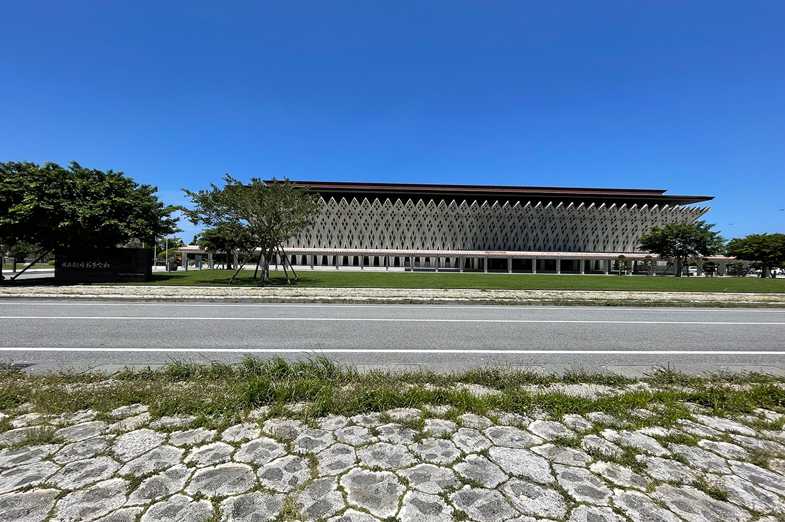
В зале «Гараман» в селе Гинодза проходят концерты и выступления деревенских коллективов, а время от времени и спектакли окинавского театра. И там, и в Национальном театре идут субтитры, так что диалект понимать не обязательно. Спектакли бывают и в городских залах по всей префектуре: афиши ищите в листовках у входа в залы и в соцсетях трупп.
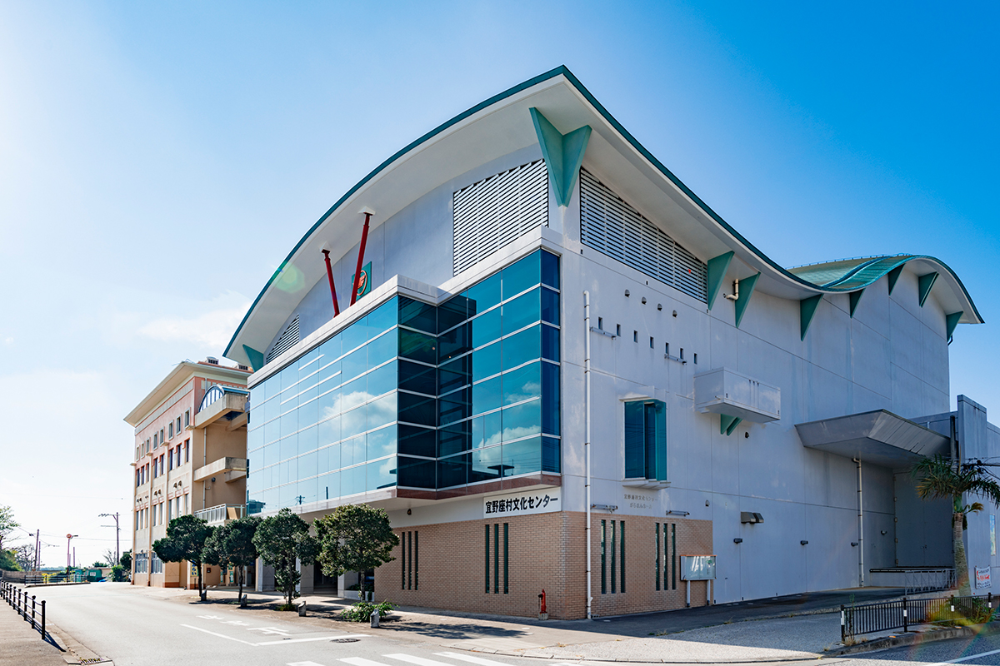
Национальный театр Окинавы
- Адрес
- префектура Окинава, город Урасоэ, Сэрикяку, 4-14-1
- Телефон
- +81 98-871-3311
- Часы работы
- 10:00–18:00 (время спектаклей разное)
- Выходные
- новогодние праздники
- Сайт
- nt-okinawa.or.jp
Культурный центр села Гинодза, зал «Гараман»
- Адрес
- префектура Окинава, село Гинодза, Гинодза, 314-1
- Телефон
- +81 98-983-2613
- Часы работы
- 9:00–18:00
- Выходные
- вторник
- Сайт
- garaman.jp
Песни
Минъё: от разговора с богами до пластинок
Окинавская песня началась с обрядовых напевов, которыми говорили с богами: просили об урожае и о безопасном плавании. Двор королевства Рюкю собрал эти тексты в «Оморо соси», самый древний сборник песен Рюкю. Придворная музыка позже стала называться рюкюской классической, а народные песни минъё появились, когда её вынесли за стены замка Сюри и превратили в песни для веселья.
В Сюри в то время собирали юношей и девушек из провинции на службу, и у них была возможность научиться петь под сансин. Когда королевства не стало, одни женщины оттачивали это искусство в трёх увеселительных кварталах Нахи. Бывшие самураи уходили в деревни подальше от Сюри, пахали землю, делали сансины и сочиняли песни о простой жизни.
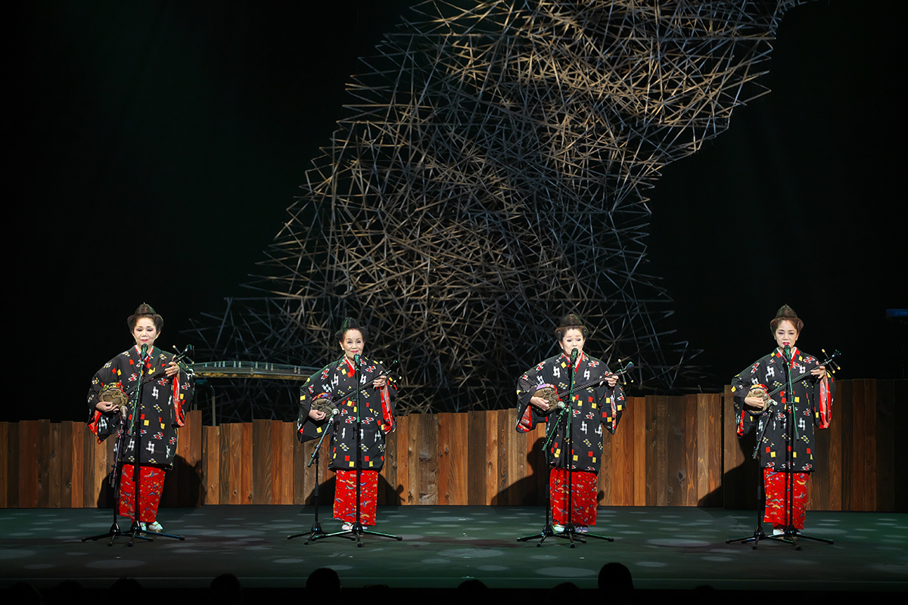
До войны была в моде «моаиби»: по вечерам юноши и девушки собирались на берегу или в поле и пели, и многие песни рождались прямо там. Первую запись на Окинаве сделали в 1916 году: торговец, переехавший из Осаки, записал 40 песен. В 1927 году Тёки Фукухара, которого называют отцом окинавской народной песни, основал в Осаке, куда уехал на заработки, фирму «Маруфуку рекодо». После этого Окинава стала настоящей страной пластинок: одно время здесь работало до 50 лейблов.
С конца 1950-х до начала 1970-х годов длился первый золотой век минъё. Центром возрождения стал послевоенный Кодза, нынешний город Окинава, и имена тамошних певцов, например Ринсё Кадэкару, помнят до сих пор. Песен минъё бесчисленное множество, и одну и ту же поют разные певцы, и сравнивать, как её исполняет тот или иной певец, отдельное удовольствие. Знаток островных песен советует начать с записей Юки Ямадзато, которую зовут королевой островной песни, Тёки Фукухары, Ринсё Кадэкару и Мисако Осиро.
Живьём
Бар минъё «Нанта-хама» в Кодза
Живые концерты минъё стали обычным делом в конце 1950-х годов, когда трое певцов объединились и начали ездить с «шоу минъё» по сельским клубам. Потом певцы стали открывать собственные заведения, и сегодня бары с народной песней есть в Нахе, в Кодза и по всей префектуре.
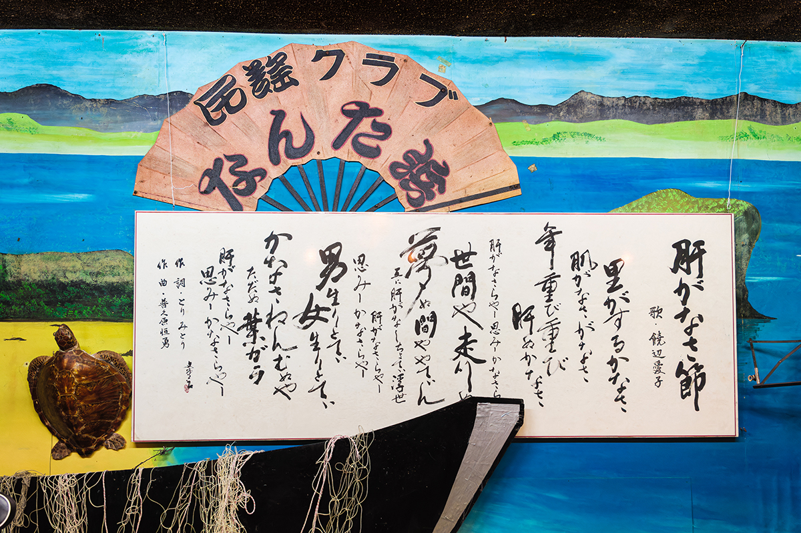
Хозяйка бара «Нанта-хама» сама знаменитая певица, на сцене больше 60 лет. Бар назван по её первой песне 1966 года, а открыла она его в 1969 году. Ринсё Кадэкару, которого она звала «отцом», двадцать лет был здесь постоянным певцом.
«Когда я открылась, в Кодза было полно клубов минъё. Сохранить диалект очень важно, поэтому я со всеми говорю на утинагути. Песни под сансин, разговоры: приходите и окунитесь в Окинаву с головой»
хозяйка «Нанта-хама»
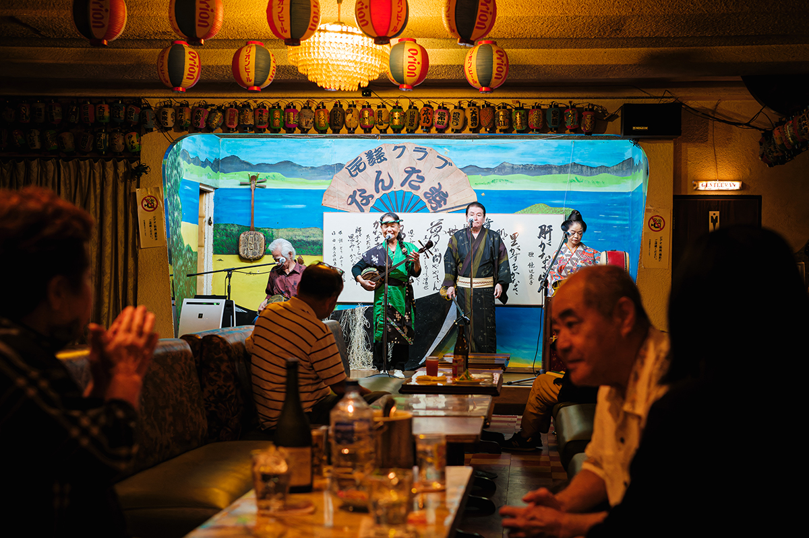
«Нанта-хама»
- Адрес
- префектура Окинава, город Окинава, Уэти, 1-15-12
- Телефон
- +81 98-932-5930
- Часы работы
- 21:00–3:30
- Выходные
- понедельник, четверг
Музыка сегодня
Где узнать, что играют
Свежие новости окинавской музыки можно найти в соцсетях музыкантов, но надёжнее спросить на месте. На Окинаве любят листовки и плакаты, поэтому многое узнаёшь, просто гуляя по кафе и лавкам. А о ближайших концертах и новых записях стоит спросить там, где местной музыкой живут каждый день.
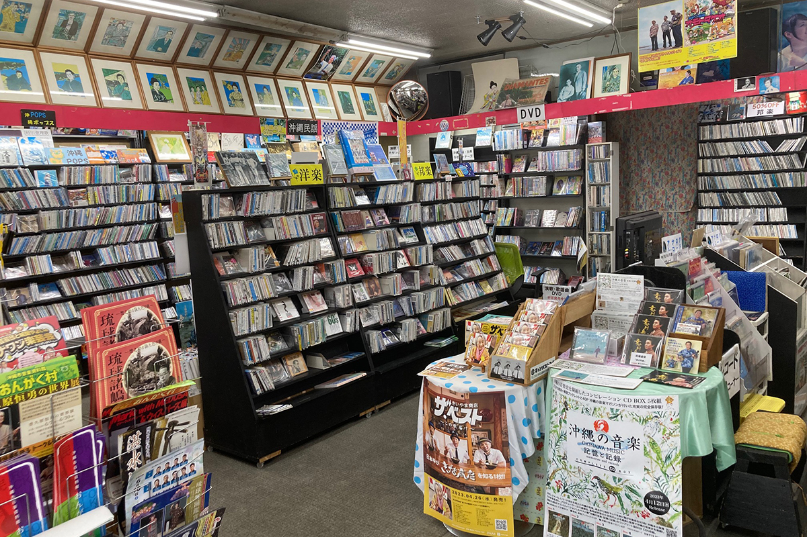
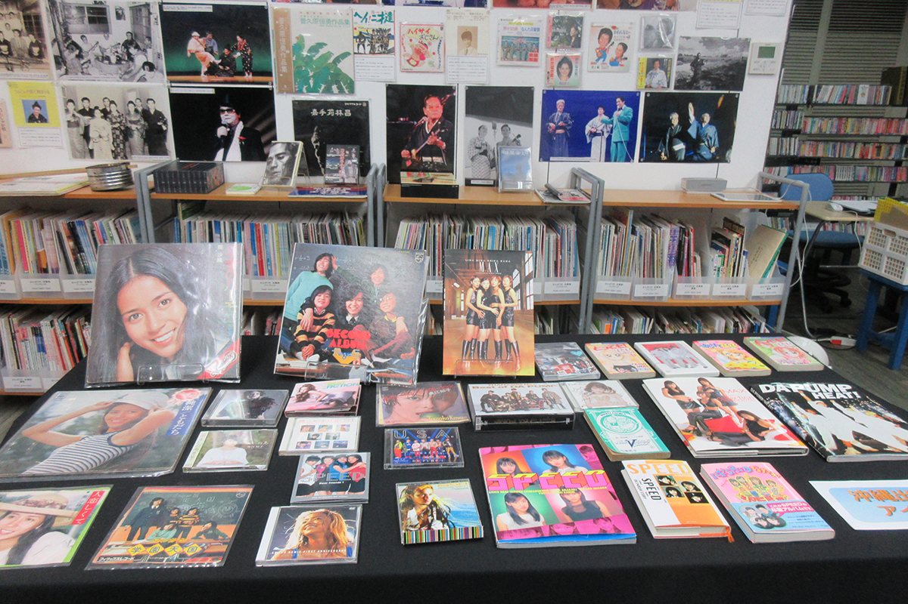
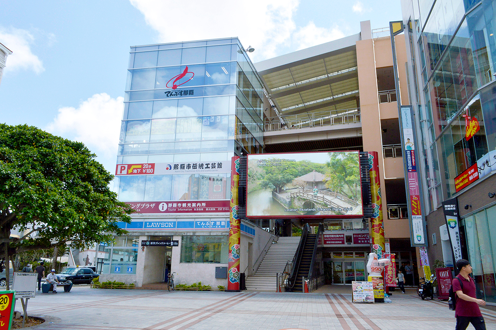
Campus Records
- Адрес
- префектура Окинава, город Окинава, Кубота, 1-7-22
- Телефон
- +81 98-932-3801
- Часы работы
- 10:00–20:00
- Выходные
- воскресенье
Музыкальный архив города Окинава «Онгаку-мура»
- Адрес
- префектура Окинава, город Окинава, Тюо, 1-7-3
- Телефон
- +81 98-923-3224
- Часы работы
- 12:00–18:00
- Выходные
- новогодние праздники
- Цены / Вход
- бесплатно
Культурный центр «Тэмбусу», Наха
- Адрес
- префектура Окинава, Наха, Макиси, 3-2-10
- Телефон
- +81 98-868-7810
- Часы работы
- 9:00–22:00, по понедельникам (кроме праздников) до 18:00
- Выходные
- 2-й и 4-й понедельник (если праздник, то следующий день), новогодние праздники
- Сайт
- tenbusukan.jp
Фото: Хирота Аоцука, Юкико Сираки.